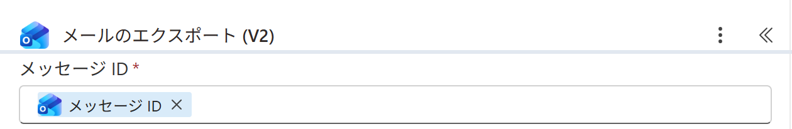
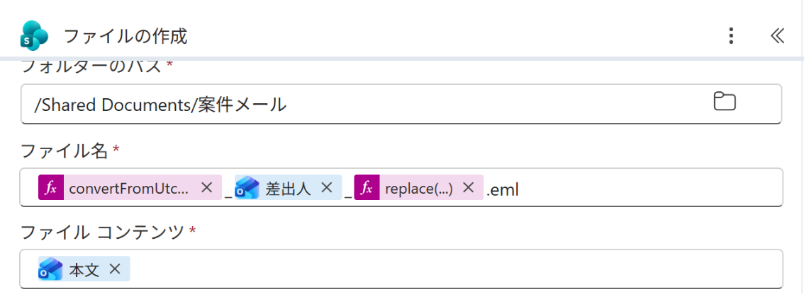

Vol.151-4
要の設定はファイル名と中身

ファイル名は受信日時を yyyyMMdd_HHmm（日本時間）にし、件名の記号は replace で消します。
中身はエクスポートの出力をそのまま渡します
中身はエクスポートの出力をそのまま渡します

A
A
メッセージ ID はトリガーの動的コンテンツ メッセージ ID
A
出力は本文という名前で次のアクションに出てくる

B
C
D
B
フォルダーのパス /Shared Documents/案件メール
C
ファイル名は 受信日時（式）_差出人_件名（式）.eml
D
ファイル コンテンツにエクスポートの 本文
件名の記号は replace を重ねて、/ : ? を - や空に置き換える
出典：Microsoft Learn